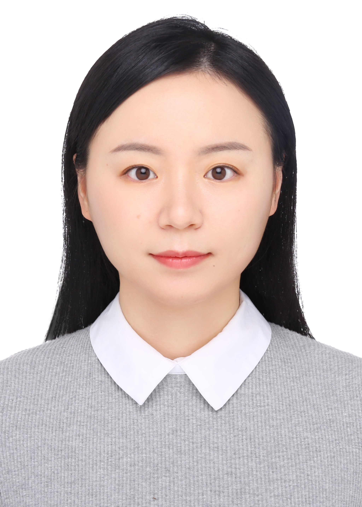

Yangqin Feng's Homepage
|  |
Yangqin Feng
Research Scientist
Institute of High Performance Computing, A*STAR, Singapore
1 Fusionopolis Way, #16-16 Connexis North, Singapore 138632
Email: fengyangqin [at] outlook [dot] com
|
Welcome to my homepage. I am a research scientist at the Institute of High Performance Computing (IHPC), Agency for Science, Technology and Research (A*STAR), Singapore. Before joining IHPC, I received my PhD degree in Computer Science from Sichuan University in 2019, supervised by Professor Lei Zhang. From 2017 to 2018, I was a visiting PhD student at the Medical Imaging and Image Interpretation Group, School of Computer Science, University of Birmingham, United Kingdom, under the supervision of Prof. Hamid Dehghani.
My research interests are in machine learning and deep nerual networks. The related topics include representation learning, deep neural networks, image classfication, medical image analysis, etc.
Publication
-
Category-aware test-time training domain adaptation
IEEE Conference on Artificial Intelligence, 2024
Yangqin Feng, Xinxing Xu, Huazhu Fu, Yan Wang, Zizhou Wang, Liangli Zhen, Rick Siow Mong Goh, Yong Liu
-
Cost-sensitive distribution alignment for improving automated medical diagnosis using retinal fundus photography
IEEE Conference on Artificial Intelligence, 2024
Yangqin Feng, Xinxing Xu, Zizhou Wang, Yan Wang, Huazhu Fu, et al.
-
MedNAS: Multi-scale training-free neural architecture search for medical image analysis
IEEE Transactions on Evolutionary Computation, 2024
Yan Wang, Liangli Zhen, Jianwei Zhang, Miqing Li, Lei Zhang, Zizhou Wang, Yangqin Feng, Yu Xue, Xiao Wang, et al.
-
Geometric correspondence-based multimodal learning for ophthalmic image analysis
IEEE Transactions on Medical Imaging, 2024
Yan Wang, Liangli Zhen, Tien-En Tan, Huazhu Fu, Yangqin Feng, Zizhou Wang, Xinxing Xu, Rick Siow Mong Goh, et al.
-
Consistent representation via contrastive learning for skin lesion diagnosis
Computer Methods and Programs in Biomedicine, 2023
Zizhou Wang, Lei Zhang, Xin Shu, Yan Wang, Yangqin Feng
-
Minimal-supervised medical image segmentation via vector quantization memory
MICCAI, 2023
Yanyu Xu, Menghan Zhou, Yangqin Feng, Xinxing Xu, Huazhu Fu, Rick Siow Mong Goh, Yong Liu
-
Deep neural network augments performance of junior residents in diagnosing COVID-19 pneumonia on chest radiographs
Diagnostics, 2023
Yangqin Feng, Jordan Sim Zheng Ting, Xinxing Xu, Chew Bee Kun, Edward Ong Tien En, Hendra Irawan Tan Wee Jun, Yonghan Ting et al.
-
Contrastive domain adaptation with consistency match for automated pneumonia diagnosis
Medical Image Analysis, 2023
Yangqin Feng, Zizhou Wang, Xinxing Xu, et al.
A feature space-restricted attention attack on medical deep learning systems
IEEE Transactions on Cybernetics, 2022
Zizhou Wang, Xin Shu, Yan Wang, Yangqin Feng, Lei Zhang, Zhang Yi.
-
Adversarial multimodal fusion with attention mechanism for skin lesion classification using clinical and dermoscopic images
Medical Image Analysis, 2022
Yan Wang, Yangqin Feng, Lei Zhang, Joey Tianyi Zhou, Yong Liu, Rick Siow Mong Goh, and Liangli Zhen
-
Diagnostic performance of a deep learning model deployed at a national Covid-19 screening facility for detection of pneumonia on frontal chest radiographs
Healthcare, 2022
Jordan ZT Sim, Yong-Han Ting, Yuan Tang, Yangqin Feng, Xiaofeng Lei, Xiaohong Wang, Wen-Xiang Chen, Su Huang, Sum-Thai Wong, Zhongkang Lu, Yingnan Cui, Soo-Kng Teo, Xin-Xing Xu, Wei-Min Huang, Cher-Heng Tan
-
Deep supervised domain adaptation for pneumonia diagnosis from chest X-ray images
IEEE Journal of Biomedical and Health Informatics, 2022
Yangqin Feng, Xinxing Xu, Yan Wang, Xiaofeng Lei, Soo Kng Teo, Jordan Sim Zheng Ting, Yonghan Ting, Liangli Zhen, Joey Tianyi Zhou, Yong Liu, Cher Heng Tan
-
WDCCNet: Weighted double-classifier constraint neural network for mammographic image classification
IEEE Transactions on Medical Imaging, 2022
Yan Wang, Zizhou Wang, Yangqin Feng, Lei Zhang
-
Few-shot domain adaptation with polymorphic transformers
MICCAI, 2021
Shaohua Li, Xiuchao Sui, Jie Fu, Huazhu Fu, Xiangde Luo, Yangqin Feng, Xinxing Xu, Yong Liu, Daniel Ting, Rick Siow Mong Goh
-
Deep adversarial domain adaptation for breast cancer screening from mammograms
Medical Image Analysis, to be published, 2021
Yan Wang, Yangqin Feng, Lei Zhang, Zizhou Wang, Qing Lv, Zhang Yi
-
A dual simple recurrent network model for chunking and abstract processes in sequence learning
Frontiers in Psychology, to be published, 2021
Lituan Wang, Yangqin Feng, Qiufang Fu, Jianyong Wang, Xunwei Sun, Xiaolan Fu, Lei Zhang, Zhang Yi
-
Feature-sensitive deep convolutional neural network for multi-instance breast cancer detection
IEEE/ACM Transactions on Computational Biology and Bioinformatics, to be published, 2021
Yan Wang, Lei Zhang, Xin Shu, Yangqin Feng, Yi Zhang, Qing Lv
-
Application of deep neural networks to improve diagnostic accuracy of rheumatoid arthritis using diffuse optical tomography
Quantum Electronics, 2020
Yangqin Feng, Daniel Lighter, Lei Zhang, Yan Wang, Hamid Dehghani
-
Deep neural networks improve diagnostic accuracy of rheumatoid arthritis using diffuse optical tomography
European Conference on Biomedical Optics, 2019
Hamid Dehghani, Yangqin Feng, Daniel Lighter, Lei Zhang, Yan Wang
-
Deep manifold preserving autoencoder for classifying breast cancer histopathological images
IEEE/ACM transactions on computational biology and bioinformatics, 2018
Yangqin Feng, Lei Zhang, Juan Mo
-
Exudate-based diabetic macular edema recognition in retinal images using cascaded deep residual networks
Neurocomputing, 2018
Juan Mo, Lei Zhang, Yangqin Feng
-
Breast cancer cell nuclei classification in histopathology images using deep neural networks
International journal of computer assisted radiology and surgery, 2018
Yangqin Feng, Lei Zhang, Zhang Yi
-
A multi-level context fusion network for exudate segmentation in retinal images
ICACI, 2017
Juan Mo, Lei Zhang, Yangqin Feng
-
A neural network model of chunking and abstract processes in implicit sequence learning: OR1505
International Journal of Psychology, 2016
Qiufang Fu, Lituan Wang, Yangqin Feng, Jianyong Wang, Xiaolan Fu, Lei Zhang, Zhang Yi
Awards and Honours
- The COVID-19 Resilience Medal, Singapore National Award, 2023.
- The National Healthcare Innovation and Productivity (HIP) Medal for “best practice medal - automation, it and robotics innovation”, Singapore, 2021. (Team Award)
- The Singapore IT Leaders Award, 2021. (Team Award)